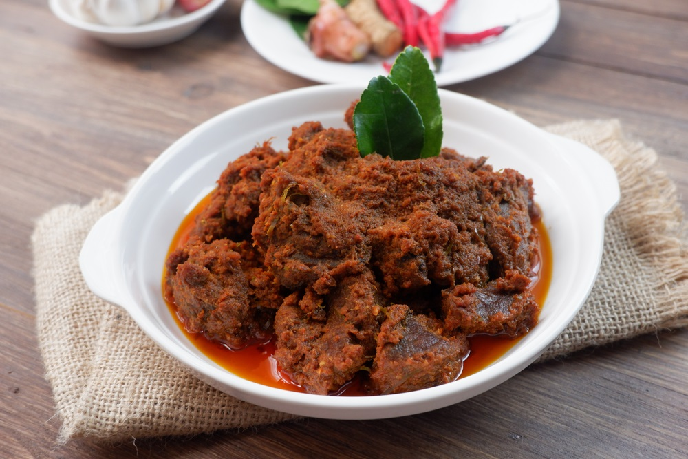

Rendang, sebagaimana dikutip dari Wikipedia, memiliki posisi istimewa dalam budaya masyarakat Minang. Rendang memiliki filosofi tersendiri bagi masyarakat Minang Sumatra Barat, yaitu musyawarah dan mufakat, yang berangkat dari empat bahan pokok yang melambangkan keutuhan masyarakat Minang.
Secara simbolik, dagiang (daging sapi) melambangkan "niniak mamak" (para pemimpin suku adat), karambia (kelapa) melambangkan "cadiak pandai" (kaum Intelektual), lado (cabai) melambangkan "alim ilama" yang tegas untuk mengajarkan syariat agama, dan pemasak (bumbu) melambangkan keseluruhan masyarakat Minangkabau.
Dalam tradisi Minangkabau, rendang adalah hidangan yang wajib disajikan dalam setiap perayaan adat, seperti berbagai upacara adat Minangkabau, kenduri, atau menyambut tamu kehormatan.
Dalam tradisi Melayu, baik di Riau, Jambi, Bengkulu, Palembang, Lampung, Medan atau Semenanjung Malaya, rendang menjadi hidangan istimewa yang dihidangkan dalam kenduri khitanan, ulang tahun, pernikahan, barzanji, atau perhelatan keagamaan, seperti Idul Fitri dan Idul Qurban.
Asal usul rendang ditelusuri berasal dari Sumatra, khususnya Minangkabau. Bagi masyarakat Minang, rendang sudah ada sejak dahulu dan telah menjadi masakan tradisi yang dihidangkan dalam berbagai acara adat dan hidangan keseharian.
Sebagai masakan tradisi, rendang diduga telah lahir sejak orang Minang menggelar acara adat pertamanya. Kemudian seni memasak ini berkembang ke kawasan serantau berbudaya Melayu lainnya; mulai dari Mandailing, Riau, Jambi, hingga ke negeri seberang di Negeri Sembilan yang banyak dihuni perantau asal Minangkabau.Karena itulah rendang dikenal luas baik di Sumatra dan Semenanjung Malaya.